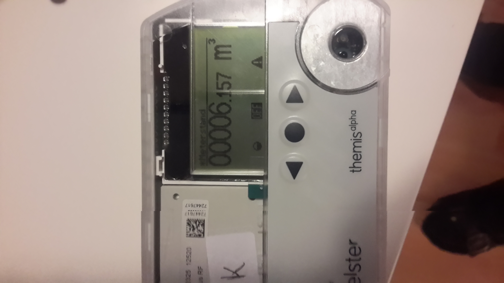

<!DOCTYPE html>
<html>
<head>
    <meta charset="utf-8"/>


    <!-- PM> install-package ionic -->
    <!--
    Customize the content security policy in the meta tag below as needed. Add 'unsafe-inline' to default-src to enable inline JavaScript.
    For details, see http://go.microsoft.com/fwlink/?LinkID=617521
    -->
    <meta http-equiv="Content-Security-Policy"
          content="default-src 'self' data: gap: https://ssl.gstatic.com 'unsafe-eval'; style-src 'self' 'unsafe-inline'; media-src *">

    <meta name="viewport" content="initial-scale=1, maximum-scale=1, user-scalable=no, width=device-width">
    <title>BlankCordovaApp1</title>

    <!-- BlankCordovaApp1 references -->
    <link href="css/index.css" rel="stylesheet"/>

    <link href="../lib/ionic/css/ionic.css" rel="stylesheet"/>

    <script src="scripts/platformOverrides.js"></script>
    

    <!--<script src="../lib/ionic/js/ionic.min.js"></script>-->
    <!-- ionic/angularjs js -->
    <!--<script src="../lib/ionic/js/ionic.bundle.min.js"></script>-->
    <link href="http://code.ionicframework.com/1.0.0-rc.5/css/ionic.css" rel="stylesheet">
    <!-- ionic/angularjs js -->
    <script src="http://code.ionicframework.com/1.0.0-rc.5/js/ionic.bundle.min.js"></script>

    <!-- Cordova reference, this is added to your app when it's built. -->
    <script src="cordova.js"></script>

    <script src="scripts/app.js"></script>

    <!-- own scripts -->
    <script src="scripts/grey.js"></script>

    <script src="scripts/index.js"></script>

    <script src="scripts/controllers.js"></script>
   

</head>

<body ng-app="angularApp">
<ion-nav-view></ion-nav-view>

<!--<p>Hello, welcome to Marcus playground :)!</p>-->

<!-- add camera in config.xml -->
<!--<input id="btnPhoto" type="button" value="Press for a photo"/>
<p id="lastPhoto"></p>


<br/>
<input id="btnGrey" type="button" value="Do it in grey!"/>
<p id="greyPhoto"></p>-->


</body>
</html>
